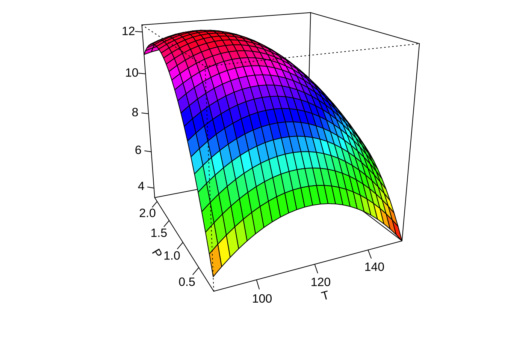

7 반응표면 분석
7.1 반응표면 분석 개요
7.1.1 실험계획의 절차
요인배치법의 실험 자료의 분석은 실험조건인 처리에서의 모평균 비교.
분산분석을 통하여 유의한 요인효과들을 선별
각 처리에서 예측치 구하기.
실험에서 고려된 처리조건들 중에서 모평균의 값을 최적으로 하는 실험조건 찾기 및 재현성 검토
7.1.2 반응표면분석의 목적
반응표면분석(response surface method)에서는 관심영역에 속한 임의의 계량인자(quantatitative factor)들의 값에서 수율(반응변수)의 예측이 실험 목적이다.
일단 반응표변분석에서는 두 개의 계량인자 \(x_1\), \(x_2\) 와 반응변수 \(y\) 의 모평균 \(\eta =E(y)\)이 다음과 같은 함수관계를 가진다고 가정한다.
\[ \eta = f(x_1, x_2) \]
위의 관계에서 함수 \(f(x_1, x_2)\)는 모르는 함수이다.
반응표면분석의 목적은 반응변수의 모평균 \(\eta\)의 최대값 \(\eta^*\) 가 나타나는 계량인자의 수준 \(x_1^*\) 와 \(x_2^*\) 를 주어진 영역에서 찾는 것이다.
\[\eta^* = \max_{x_1, x_2} f(x_1, x_2) =f(x_1^*, x_2^*) \]
함수 \(f(x_1, x_2)\)는 복잡한 형태를 가질 수 있지만 반응표변분석에서는 최대값의 주위에서 함수 \(f(x_1, x_2)\)를 이차함수로 근사하여 최적점을 찾는다.
7.1.3 반응표면분석의 절차
반응값을 나타내는 변수를 반응변수로, 계량인자를 설명변수로 간주하여 실험 자료를 이용하여 회귀분석을 실시.
- 관심영역의 최적조건 근처에서 곡선효과 존재
- 곡선효과를 반영하는 가장 간결한 모형인 이차 다항모형 가정
- 적절한 모형 찾기.
예측치를 최적으로 하는 최적조건을 관심영역에서 찾고, 최적조건에서의 재현성 검토하기.
반응표면분석의 절차는 다음과 같이 크게 3단계로 구성된다.
2수준 일부실시법에 의해서 핵심인자들을 선별하기.
선별된 핵심인자들에 대한 축차적인 실험 설계(중심점을 갖는 2수준 요인 배치법)와 분석에 의해서 최적조건 근처의 설명변수들의 영역 으로 이동하기. (최대경사법 적용)
\[ y = \beta_0 + \beta_1 x_1 + \beta_2 x_2 + \dots + \beta_p x_p + e \]
- 최적조건 근처에서 2차 모형을 가정, ccd(중심합성설계)에 의한 실험설계 및 실험자료의 회귀분석을 통한 적절한 모형 찾기 및 최적조 건 찾기와 재현성 검토.
\[ y = \beta_0 + \sum_{i=1}^k \beta_i x_i + \sum_{i=1}^k \beta_{ii} x^2_i + \underset{i<j}{\sum \sum} \beta_{ij} x_i x_j + e \]
7.2 최대경사법
7.2.1 개요
초기 실험에서는 실험에서 고려하는 계량인자들의 관심 영역이 반응변수의 최적값을 가지는 영역에서 멀리 떨어져 있는 경우가 흔하다.
따라서 초기 실험에서는 최적의 영역으로 이동하기 위한 계량인자들의 방향을 알아내는 것이 중요하다.
간단한 초기 실험의 결과를 이용하여 계량인자들의 값을 최적점 근처로 순차적으로 이동시킬 수 있는 쉽고 경제적인 절차가 필요하다.
주어진 선형모형에서 계량인자들의 값을 이동시킬 수 있는 간단한 방법들 중의 하나는 최대경사법(method of steepest ascent) 이다.
7.2.2 9.2절 자료와 변환
교과서 9.2 절에 나오는 실험 자료를 고려해 보자. 화학공장에서 공정의 수율(\(y\))을 최적화하는 공정조건을 찾는 실험자가 관심이 있는 시간(\(x_1\), time)의 범위는 30-40분 이고 온도(\(x_2\), temp)의 범위는 160-180도 라고 하자. 이제 주어진 시간과 온도에 따라서 실험을 7번 수행하였으며 결과 자료는 다음과 같다.
time <- c(30,30,40,40,35,35,35)
temp <- c(160, 180, 160, 180, 170, 170, 170)
y <- c(72.5, 74.2, 76.3, 77.0, 74.8, 75.6, 75.2)
df1 <- data.frame(time=time, temp=temp, y=y)
df1 time temp y
1 30 160 72.5
2 30 180 74.2
3 40 160 76.3
4 40 180 77.0
5 35 170 74.8
6 35 170 75.6
7 35 170 75.2반응표면분석에서는 고려하는 변량의 범위를 \((-1,1)\) 로 변환하는 작업을 먼저 수행한다. 위의 자료에서 시간과 온도의 범위를 \((-1,1)\)로 변환하기 위하여 다음과 같은 식을 적용한다.
\[ x_1 = \frac{\text{time} - 35}{5}, \quad x_2 = \frac{\text{temp} - 170}{10} \]
위와 같은 변환은 패키지 rsm 에 있는 함수 coded.data를 사용해서 쉽게 수행할 수 있다.
df11 <- coded.data(df1, x1 ~ (time - 35)/5, x2 ~ (temp - 170)/10)
class(df11)[1] "coded.data" "data.frame"df11 time temp y
1 30 160 72.5
2 30 180 74.2
3 40 160 76.3
4 40 180 77.0
5 35 170 74.8
6 35 170 75.6
7 35 170 75.2
Data are stored in coded form using these coding formulas ...
x1 ~ (time - 35)/5
x2 ~ (temp - 170)/10위에서 변환된 자료 df11 는 변환된 이름 x1 과 x2 로 자료가 저장되어 있지만 원래 변수의 이름 time 과 temp 도 특정한 함수에서 사용이 가능한다.
9.2 장 자료에서 7번 실험을 수행하는 경우 고려한 실험점(experiment point)은 정사각형의 각 꼭지점에서 하나의 관측값을 얻고 중심점 \((0,0)\) 에서 3개의 실험값을 얻었다.
df11 %>% ggplot(aes(time, temp)) + geom_point(colour = "red", size = 2) + theme_bw()
df11 %>% ggplot(aes(x1, x2)) + geom_point(colour = "red", size = 2) + theme_bw()변환된 자료 x1 과 x2 의 값으로 부터 원래 자료의 값을 얻는 방법은 함수 code2val()을 사용한다. 예를 들어 x1 = 0.5 , x2 = 0.0 으로 코딩된 원래 자료 time 과 temp 의 값은 다음과 같이 얻을 수 있다.
code2val(data.frame(x1 = c(0.5), x2 = c(0.0)), codings(df11)) time temp
1 37.5 1707.2.3 선형회귀식
다음은 반응변수 \(y\) 를 에측하는 모형으로 두 개의 변량인자 \(x_1\)과 \(x_2\) 를 가지는 다음과 같은 일차선형 모형을 고려하자.
\[ y = \beta_0 + \beta_1 x_1 + \beta_2 x_2 + e \tag{7.1}\]
주어진 자료를 이용하여 위의 일차선형 모형의 회귀계수들을 추정하면 반응변수의 평균 \(E(y|x)\) 에 대한 다음과 같은 예측식을 얻을 수 있다.
\[ \widehat {E(y|x)} = \hat y = \hat \beta_0 + \hat \beta_1 x_1 + \hat \beta_2 x_2 \tag{7.2}\]
변환된 \(x_1\) 과 \(x_2\) 가 저장된 데이터 프레임 df11 에 있는 자료를 이용하여 일차선형 모형을 적합한 결과는 다음과 같다.
lmdf11 <- lm(y ~ x1 + x2, data=df11)
summary(lmdf11)
Call:
lm.default(formula = y ~ x1 + x2, data = df11)
Residuals:
1 2 3 4 5 6 7
-0.3357 0.1643 0.1643 -0.3357 -0.2857 0.5143 0.1143
Coefficients:
Estimate Std. Error t value Pr(>|t|)
(Intercept) 75.0857 0.1510 497.201 9.82e-11 ***
x1 1.6500 0.1998 8.259 0.00117 **
x2 0.6000 0.1998 3.003 0.03981 *
---
Signif. codes: 0 '***' 0.001 '**' 0.01 '*' 0.05 '.' 0.1 ' ' 1
Residual standard error: 0.3996 on 4 degrees of freedom
Multiple R-squared: 0.9508, Adjusted R-squared: 0.9261
F-statistic: 38.62 on 2 and 4 DF, p-value: 0.002425예측식 식 7.2 를 3차원 공간에 표시하면 다음과 같은 평면으로 나타나게 된다. 패키지 scatterplot3d 의 함수 scatterplot3d()를 이용하여 3차원 산포도와 추정된 선형식을 그릴 수 있다.
s3d <- scatterplot3d(as.data.frame(df11), type = "h", color = "blue", angle=55, pch = 16, xlab="x1", ylab="x2")
s3d$plane3d(lmdf11)위에서 적합된 예측식 식 7.2 을 함수 contour.lm()을 이용하여 등고선 그림으로 나타내면 다음 그림과 같다.
contour.lm(lmdf11, x2~x1, labcex=1.4 )
points(c(-1,-1,1,1, 0), c(-1,1,-1,1,0), col="blue", cex=1.3, pch=19)7.2.4 최대경사법
이제 반응변수의 변화에 대한 선형 예측식이 식 7.2 로 주어진 경우 반응변수가 가장 크게 증가하는 방향을 2차원 공간 \((x_1, x_2)\)에서 찾아보자. 이렇게 공간에서 다변량 함수의 변화가 가장 크게 변하는 방향을 찾는 방법을 최대경사법(method of steepest ascent)이라고 부르며 이는 기울기 하강법(gradient descent method)의 반대 방법이다.
이변량 함수 \(f(x_1, x_2)\) 에 대한 기울기 벡터(gradient) \(\nabla f\)는 다음과 같이 각 축에 대한 부분 미분(partial derivative)로 이루어진 벡터이다.
\[ \nabla f = \nabla f (x_1, x_2) = \begin{bmatrix} \pardifftwo{f(x_1, x_2)}{x_1} \\ \pardifftwo{f(x_1, x_2)}{x_2} \end{bmatrix} \]
기울기 벡터 \(\nabla f\) 에 대한 기하학적 의미는 다음과 같은 그림으로 나타낼 수 있으며 \(\nabla f\)는 주어진 점에서 함수 \(f\)가 가장 빨리 증가하는 방향을 의미한다. 따라서 기울기 벡터 \(\nabla f\) 를 최대 경사(steepest ascent) 벡터라고 부른다.
선형 예측식 식 7.2 이 주어진 경우 2차원 공간 \((x_1, x_2)\)에서 반응변수가 가장 크게 증가하는 방향, 즉 최대경사 방향 \(\nabla f\) 은 다음과 같이 주어진다.
\[ \nabla f = \begin{bmatrix} \pardifftwo{f(x_1, x_2)}{x_1} \\ \pardifftwo{f(x_1, x_2)}{x_2} \\ \end{bmatrix} = \begin{bmatrix} \pardifftwo{(\hat \beta_0 + \hat \beta_1 x_1 + \hat \beta_2 x_2)}{x_1} \\ \pardifftwo{(\hat \beta_0 + \hat \beta_1 x_1 + \hat \beta_2 x_2)}{x_2} \end{bmatrix} = \begin{bmatrix} \hat \beta_1 \\ \hat \beta_2 \end{bmatrix} \tag{7.3}\]
따라서 9.2절의 실험자료에 대하여 적합한 모형식을 이용하면 최대경사 벡터 \(\nabla f\) 는 다음과 같이 주어진다.
\[ \nabla f = \begin{bmatrix} 1.65 \\ 0.6 \end{bmatrix} \tag{7.4}\]
위의 최대경사 벡터 \(\nabla f\)은 적합한 모형식에서 \(x_1\)과 \(x_2\) 가 1 단위 만큼 증가할 때 반응변수의 변화를 나타내는 회귀계수 \(\hat \beta_1\), \(\hat \beta_2\)의 방향을 의미한다.
coef(lmdf11)(Intercept) x1 x2
75.08571 1.65000 0.60000 식 식 7.4 에 나타난 최대경사 벡터 \(\nabla f\)을 등고선 그림에 나타내면 다음과 같다. 아래의 등고선에서 최대경사 방향은 기울기가 \(0.6/1.65=0.364\) 를 가진 원점을 지나는 직선 방향이다.
contour.lm(lmdf11, x2~x1, xlabs=c( "x1", "x2"), bounds = list(x1 = c(-3, 3), x2 = c(-3, 3)))
points(c(-1,-1,1,1, 0), c(-1,1,-1,1,0), col="blue", cex=1.3, pch=19)
slope <- as.numeric( coef(lmdf11)["x2"] / coef(lmdf11)["x1"])
slope[1] 0.3636364lines(x=c(0,1), y=c(0,slope ), col="red")
abline(h=0, lty=2)
abline(v=0, lty=2)최대경사 벡터를 구하는 경우 벡터의 길이가 1 이 되도록 하는 경우도 있다. 이러한 경우의 최대경사 방향의 벡터는 다음과 같다.
\[ \begin{bmatrix} 1.65 / \sqrt{1.65^2 + 0.6^2} \\ 0.60 / \sqrt{1.65^2 + 0.6^2} \\ \end{bmatrix} = \begin{bmatrix} 0.9398 \\ 0.3417 \end{bmatrix} \tag{7.5}\]
radi <- sqrt(sum(c(coef(lmdf11)["x1"], coef(lmdf11)["x2"])^2))
c(coef(lmdf11)["x1"], coef(lmdf11)["x2"])/radi x1 x2
0.9397934 0.3417431 7.2.5 패키지 rsm
위에서 언급한 분석을 포함한 다양한 반응표면 분석은 패키지 rsm 에 있는 여러 가지 함수를 이용하여 쉽게 수행할 수 있다.
7.2.5.1 일차 선형식의 적합
먼저 일차 선형식 식 7.1 을 적합하는 경우 함수 rsm() 을 다음과 같이 사용할 수 있다. 모형식에서 FO(x1, x2) 는 2개의 변수 x1 과 x2 로 구성된 일차선형식(FO; First Order function)를 사용하는 것을 의미한다.
rsmdf1 <- rsm(y ~ FO(x1, x2), data = df11)
summary(rsmdf1)
Call:
rsm(formula = y ~ FO(x1, x2), data = df11)
Estimate Std. Error t value Pr(>|t|)
(Intercept) 75.08571 0.15102 497.2005 9.818e-11 ***
x1 1.65000 0.19978 8.2592 0.001172 **
x2 0.60000 0.19978 3.0034 0.039810 *
---
Signif. codes: 0 '***' 0.001 '**' 0.01 '*' 0.05 '.' 0.1 ' ' 1
Multiple R-squared: 0.9508, Adjusted R-squared: 0.9261
F-statistic: 38.62 on 2 and 4 DF, p-value: 0.002425
Analysis of Variance Table
Response: y
Df Sum Sq Mean Sq F value Pr(>F)
FO(x1, x2) 2 12.3300 6.1650 38.6174 0.002425
Residuals 4 0.6386 0.1596
Lack of fit 2 0.3186 0.1593 0.9955 0.501119
Pure error 2 0.3200 0.1600
Direction of steepest ascent (at radius 1):
x1 x2
0.9397934 0.3417431
Corresponding increment in original units:
time temp
4.698967 3.417431 위의 함수 rsm()에서 얻은 결과는 선형모형을 적합하는 함수 lm() 의 결과에 추가적은 분석 결과가 포함된다. 추가 분석에 대한 설명은 다음과 같다.
Analysis of Variance Table 는 일반적인 분산분석표에 2차 반응표면 함수의 각 부분에 대한 유의성 F-검정이 주어진다. 반복이 있는 경우 적합성결여 검정(lack of fit test)이 주어지며 해당하는 p-값이 유의수준 \(\alpha\) 보다 작으면 모형의 적합성에 문제가 있다는 의미이다. 위의 결과에서는 분산분석에서
Lack of fit에 대한 p-값이 0.5011 이므로 선형모형의 적합성에는 큰 문제가 없다.Direction of steepest ascent (at radius 1) 부분에서는 길이가 1 인 최대경사 벡터 \(\nabla f\)를 구해준다.
Corresponding increment in original units 부분에서는 최대경사 벡터를 원래 변환되기 전의 자료의 단위로 구해준다.
7.2.5.2 등고선 그림
반응 표면의 등고선 그림은 함수 rsm() 의 적합 결과를 이용하여 contour() 함수를 사용하면 쉽게 그릴 수 있다.
contour(rsmdf1, ~ x1 + x2)
contour(rsmdf1, ~ x1 + x2, image = TRUE)7.2.5.3 최적 실험점 탐색
이제 실험 원점 \((0,0)\) 에서 최대경사 벡터 \(\nabla f\) 방향으로 여러 개의 실험점을 계산하려면 함수 steepest()를 사용한다. 아래의 함수에서 dist=seq(0,5, by=1) 는 최대경사 벡터 방향으로 길이가 1 만큼 증가하면서 길이가 5인 점까지 실험점을 구하라는 의미이다.
deltapoints <- steepest(rsmdf1, dist=seq(0,5, by=1))Path of steepest ascent from ridge analysis:deltapoints dist x1 x2 | time temp | yhat
1 0 0.000 0.000 | 35.000 170.00 | 75.086
2 1 0.940 0.342 | 39.700 173.42 | 76.842
3 2 1.880 0.683 | 44.400 176.83 | 78.598
4 3 2.819 1.025 | 49.095 180.25 | 80.352
5 4 3.759 1.367 | 53.795 183.67 | 82.108
6 5 4.699 1.709 | 58.495 187.09 | 83.864위에서 구한 실험점들을 등고선 그림에 표시하면 다음과 같다.
contour(rsmdf1, ~ x1 + x2, bounds = list(x1 = c(-3, 3), x2 = c(-3, 3)))
points(deltapoints$time, deltapoints$temp, cex=1.2, col="red", pch=19)만약 아래 그림과 같이 최대경사 방향으로 4번의 실험을 수행하였다면 다음 실험의 중심점은 \((50, 180.9)\)를 선택한다. 왜냐하면 더 경사면으로 올라간 실험점 \((55, 184.6)\) 에서는 반응값이 감소하기 때문이다.
7.2.6 변량이 3개 이상인 경우
heli block A R W L ave logSD
1 1 11.8 2.26 1.00 1.5 367 72
2 1 13.0 2.26 1.00 1.5 369 72
3 1 11.8 2.78 1.00 1.5 374 74
4 1 13.0 2.78 1.00 1.5 370 79
5 1 11.8 2.26 1.50 1.5 372 72
6 1 13.0 2.26 1.50 1.5 355 81
7 1 11.8 2.78 1.50 1.5 397 72
8 1 13.0 2.78 1.50 1.5 377 99
9 1 11.8 2.26 1.00 2.5 350 90
10 1 13.0 2.26 1.00 2.5 373 86
11 1 11.8 2.78 1.00 2.5 358 92
12 1 13.0 2.78 1.00 2.5 363 112
13 1 11.8 2.26 1.50 2.5 344 76
14 1 13.0 2.26 1.50 2.5 355 69
15 1 11.8 2.78 1.50 2.5 370 91
16 1 13.0 2.78 1.50 2.5 362 71
17 1 12.4 2.52 1.25 2.0 377 51
18 1 12.4 2.52 1.25 2.0 375 74
19 2 11.2 2.52 1.25 2.0 361 111
20 2 13.6 2.52 1.25 2.0 364 93
21 2 12.4 2.00 1.25 2.0 355 100
22 2 12.4 3.04 1.25 2.0 373 80
23 2 12.4 2.52 0.75 2.0 361 71
24 2 12.4 2.52 1.75 2.0 360 98
25 2 12.4 2.52 1.25 1.0 380 69
26 2 12.4 2.52 1.25 3.0 360 74
27 2 12.4 2.52 1.25 2.0 370 86
28 2 12.4 2.52 1.25 2.0 368 74
29 2 12.4 2.52 1.25 2.0 369 89
30 2 12.4 2.52 1.25 2.0 366 76
Data are stored in coded form using these coding formulas ...
x1 ~ (A - 12.4)/0.6
x2 ~ (R - 2.52)/0.26
x3 ~ (W - 1.25)/0.25
x4 ~ (L - 2)/0.5heli.rsm <- rsm(ave ~ FO(x1, x2, x3, x4), data = heli)
summary(heli.rsm)
Call:
rsm(formula = ave ~ FO(x1, x2, x3, x4), data = heli)
Estimate Std. Error t value Pr(>|t|)
(Intercept) 366.500000 1.437359 254.9816 < 2.2e-16 ***
x1 -0.083333 1.607016 -0.0519 0.9590556
x2 5.083333 1.607016 3.1632 0.0040659 **
x3 0.250000 1.607016 0.1556 0.8776230
x4 -6.083333 1.607016 -3.7855 0.0008577 ***
---
Signif. codes: 0 '***' 0.001 '**' 0.01 '*' 0.05 '.' 0.1 ' ' 1
Multiple R-squared: 0.4935, Adjusted R-squared: 0.4125
F-statistic: 6.091 on 4 and 25 DF, p-value: 0.001453
Analysis of Variance Table
Response: ave
Df Sum Sq Mean Sq F value Pr(>F)
FO(x1, x2, x3, x4) 4 1510.00 377.50 6.0907 0.001453
Residuals 25 1549.50 61.98
Lack of fit 20 1458.67 72.93 4.0147 0.064646
Pure error 5 90.83 18.17
Direction of steepest ascent (at radius 1):
x1 x2 x3 x4
-0.01050596 0.64086379 0.03151789 -0.76693536
Corresponding increment in original units:
A R W L
-0.006303578 0.166624586 0.007879473 -0.383467680 par(mfrow = c(2, 3))
contour(heli.rsm, ~ x1 + x2 + x3 + x4)steepest(heli.rsm)Path of steepest ascent from ridge analysis: dist x1 x2 x3 x4 | A R W L | yhat
1 0.0 0.000 0.000 0.000 0.000 | 12.4000 2.52000 1.25000 2.0000 | 366.500
2 0.5 -0.005 0.320 0.016 -0.383 | 12.3970 2.60320 1.25400 1.8085 | 370.461
3 1.0 -0.011 0.641 0.032 -0.767 | 12.3934 2.68666 1.25800 1.6165 | 374.433
4 1.5 -0.016 0.961 0.047 -1.150 | 12.3904 2.76986 1.26175 1.4250 | 378.394
5 2.0 -0.021 1.282 0.063 -1.534 | 12.3874 2.85332 1.26575 1.2330 | 382.366
6 2.5 -0.026 1.602 0.079 -1.917 | 12.3844 2.93652 1.26975 1.0415 | 386.327
7 3.0 -0.032 1.923 0.095 -2.301 | 12.3808 3.01998 1.27375 0.8495 | 390.299
8 3.5 -0.037 2.243 0.110 -2.684 | 12.3778 3.10318 1.27750 0.6580 | 394.260
9 4.0 -0.042 2.563 0.126 -3.068 | 12.3748 3.18638 1.28150 0.4660 | 398.227
10 4.5 -0.047 2.884 0.142 -3.451 | 12.3718 3.26984 1.28550 0.2745 | 402.193
11 5.0 -0.053 3.204 0.158 -3.835 | 12.3682 3.35304 1.28950 0.0825 | 406.1607.3 2차 반응표면
7.3.1 개요
여러번의 간단한 실험을 순차적으로 수행하면서 1차모형과 최대경사법을 이용하여 최적점 근처로 실험점을 이동한다.
최적조건 근처의 영역에서는 반응표면모형의 모형으로 곡선효과가 고려된 2차 다항 모형을 가정하고 최적점을 찾는다.
7.3.2 2차 다항 모형
이제 반응변수 \(y\)의 변화(반응표면; response surface)를 \(k\) 개의 독립변수 \(x_1, x_2, \cdots, x_k\) 로 이루어진 2차 다항식(second polynomial function)으로 적합하는 2차 다항 모형을 고려하자.
\[ y = \beta_0 + \sum_{i=1}^{k} \beta_i x_i + \sum_{i=1}^{k} \beta_{ii} x^2_i + \underset{i<j}{\sum \sum} \beta_{ij} x_i x_j +e \tag{7.6}\]
노트
반응표면분석에서 고려한 2차 다항 모형에서는 독립변수의 값들이 모두 \([-1,1]\) 사이에 있다고 가정하자.
7.3.3 이차 반응표면의 모양
예를 들어 독립변수가 두 개인 경우 다음과 같은 2차 다항 모형이 된다.
\[ y = \beta_0 + \beta_1 x_1 + \beta_2 x_2 + \beta_{11} x_1^2 + \beta_{22} x_2^2 + \beta_{12} x_1 x_2 + e \tag{7.7}\]
독립변수가 두 개인 경우 2차 다항 모형 식 7.7 은 다음 그림과 같이 다양한 반응 표면을 가질 수 있다.

7.3.4 최적점과 정상점
2차 다항모형 식 7.6 을 반응표면 분석에 사용하는 이유는 반응변수의 값이 최대가 되는 독립변수들의 값을 구하기 위함이다. 이렇게 반응변수의 값이 최대가 되는 독립변수들의 값을 최적점(optimum point) 라고 부른다.
최적점을 찾는 방법은 2차 다항모형 식 7.6 을 각 독립변수로 미분한 식을 0으로 놓고 방정식을 푸는 것이다. 최적점을 찾는 방법을 좀 더 체계적으로 구성하기 위하여 2차 다항모형 식 7.6 을 벡터와 행렬로 나타내어 보자.
먼저 자료를 이용하여 2차 다항모형 식 7.6 에 나타난 계수들을 추정한 후 반응변수의 예측식을 다음과 같이 나타낼 수 있다. 아래의 식에서 \(b_0,b_{i}, b_{ii}, b_{ij}\) 는 각각 회귀계수 \(\beta_0, \beta_{i}, \beta_{ii}, \beta_{ij}\) 의 추정값이라고 하자.
\[ \hat y = b_0 + \sum_{i=1}^{k} b_i x_i + \sum_{i=1}^{k} b_{ii} x^2_i + \underset{i<j}{\sum \sum} b_{ij} x_i x_j \tag{7.8}\]
이제 추정식 식 7.8 를 다음과 같이 벡터와 행렬로 나타내자.
\[ \hat y = b_0 + {\pmb x}^t \pmb b + {\pmb x}^t \pmb B {\pmb x} \tag{7.9}\]
여기서 \(k \times 1\) 차원의 독립변수 벡터 \(\pmb x\), \(k \times 1\) 차원의 1차 계수 벡터 \(\pmb b\), \(k \times K\) 차원의 2차 계수 행렬 \(\pmb B\) 는 다음과 같이 주어진다. 여기서 2차 계수 행렬 \(\pmb B\) 는 대칭행렬이며 비대각 원소는 계수 \(b_{ij}\)의 반 값임을 유의하자.
\[ \pmb x = \begin{bmatrix} x_1 \\ x_2 \\ \vdots \\ x_k \end{bmatrix} , \quad \pmb b = \begin{bmatrix} b_1 \\ b_2 \\ \vdots \\ b_k \end{bmatrix}, \quad \pmb B = \begin{bmatrix} b_{11} & \frac{b_{12}}{2} & \frac{b_{13}}{2} & \dots & \frac{b_{1k}}{2} \\ \frac{b_{12}}{2} & b_{22} & \frac{b_{23}}{2} & \dots & \frac{b_{2k}}{2} \\ \frac{b_{13}}{2} & \frac{b_{23}}{2} & b_{33} & \dots & \frac{b_{3k}}{2} \\ \vdots & \vdots & \vdots & \vdots & \vdots \\ \frac{b_{1k}}{2} & \frac{b_{2k}}{2} & \frac{b_{3k}}{2} & \dots & b_{kk} \end{bmatrix} \tag{7.10}\]
이제 정삼점을 찿는 방법은 2차 다항 에측식 식 7.8 를 각 독립변수 \(x_i\) 로 미분한 식을 0으로 놓은 방정식을 풀면 된다.
\[ \pardifftwo{\hat y}{x_i} = b_i + 2 b_{ii} x_i + \sum_{j \ne i} b_{ij} x_j =0, \quad i=1,2,\cdots, k \tag{7.11}\]
방정식 식 7.11 을 벡터식으로 표시하면 다음과 같은 벡터 방정식을 얻는다.
\[ \pardifftwo{\hat y}{\pmb x} = \pmb b + 2 {\pmb B} \pmb x = \pmb 0 \tag{7.12}\]
벡터 방정식 식 7.12 을 만족하는 벡터 \({\pmb x}^*\) 를 정상점(stationary point) 라고 부르며 정상점 \({\pmb x}^* = (x_1^*, x_2^*, \cdots, x_k^*)^t\) 는 다음과 같이 얻어진다.
\[ {\pmb x}^* = - \frac{1}{2} {\pmb B}^{-1} \pmb b \tag{7.13}\]
식 식 7.13 에 주어진 정상점 \({\pmb x}^*\) 은 행렬 \(\pmb B\) 의 성질에 따라서 반응값을 최대로 하는 최적점일 수도 있고 아닐 수도 있다. 다음 절에서는 정상점이 최적점일 조건을 살펴보기로 하자.
7.3.5 2차 다항식의 표현
앞 절에서 보았듯이 정상점 \({\pmb x}^*\) 은 추정된 2차 다항식에 대하여 미분방정식 식 7.13 을 만족하는 점이다.
2차 다항식은 그림 @ref(fig:plot3) 처럼 다양한 모양을 가진다. 실험의 목적이 반응변수를 최대로 하는 최적점을 찾는 것이기 떄문에 2차 다항식의 모양이 산 모양이면 정상점이 최적점이 되지만 다른 형태이면 최적점이 아니다.
정상점 \({\pmb x}^*\) 이 최적점이 될 조건은 행렬 \(\pmb B\)에 대한 정준분석(canonical analysis)를 통하여 파악할 수 있다. 정준분석은 행령의 고유값(eigen value)과 고유벡터(eigen vector) 를 통하여 이루어진다. 이 절에서는 정분분석을 하기 위하여 2차 다항식을 다루기 쉬운 형식으로 표현하고자 한다.
식 식 7.13 의 정상점 \({\pmb x}^*\) 을 중심으로 하는 축 \(\pmb z\) 를 다음과 같이 고려하고
\[ \pmb z = \pmb x - {\pmb x}^* \quad \text{ equivalently} \quad \pmb x = {\pmb x}^* + \pmb z \tag{7.14}\]
2차 다항식 식 7.9 를 다음과 같이 \(\pmb z\) 의 함수로 변환해 보자. 아래 식에서 정상점 \({\pmb x}^* = -{\pmb B}^{-1} \pmb b/2\) 이다.
\[ \begin{aligned} \hat y & = b_0 + {\pmb x}^t \pmb b + {\pmb x}^t \pmb B {\pmb x} \\ & = b_0 + {\pmb x}^t \pmb b + ({\pmb x}^* + \pmb z )^t \pmb B ({\pmb x}^* + \pmb z ) \\ & = b_0 + {\pmb x}^t \pmb b + 2 {\pmb x}^{*t} \pmb B \pmb z + {\pmb x}^{*t} \pmb B {\pmb x}^{*} + {\pmb z}^t \pmb B {\pmb z} \\ & = b_0 + {\pmb x}^t \pmb b - {\pmb b}^t {\pmb B}^{-1} \pmb B \pmb z +\frac{1}{4} {\pmb b}^t {\pmb B}^{-1} \pmb B {\pmb B}^{-1} {\pmb b} + {\pmb z}^t \pmb B {\pmb z} \\ & = b_0 + {\pmb x}^t \pmb b - {\pmb b}^t \pmb z +\frac{1}{4} {\pmb b}^t {\pmb B}^{-1}{\pmb b} + {\pmb z}^t \pmb B {\pmb z} \\ & = b_0 + ({\pmb x}^* + \pmb z)^t \pmb b - {\pmb b}^t \pmb z +\frac{1}{4} {\pmb b}^t {\pmb B}^{-1}{\pmb b} + {\pmb z}^t \pmb B {\pmb z} \\ & = b_0 + ( {\pmb z}^t \pmb b - {\pmb b}^t \pmb z) + {\pmb x}^{*t} \pmb b +\frac{1}{4} {\pmb b}^t {\pmb B}^{-1}{\pmb b} + {\pmb z}^t \pmb B {\pmb z} \\ & = b_0 + 0 + \left [ - \frac{1}{2} {\pmb b}^t {\pmb B}^{-1} \right ] {\pmb b} +\frac{1}{4} {\pmb b}^t {\pmb B}^{-1}{\pmb b} + {\pmb z}^t \pmb B {\pmb z} \\ & = \left [ b_0 - \frac{1}{4} {\pmb b}^t {\pmb B}^{-1}{\pmb b} \right ] + {\pmb z}^t \pmb B {\pmb z} \end{aligned} \tag{7.15}\]
위의 식에서 \(\pmb z= 0\) 인 점은 원래의 측으로 보면 정상점 \(\pmb x ={\pmb x}^*\) 이다. 정상점에서의 반응변수의 예측값을 \(\hat y_s\) 라고 하면
\[ \hat y_s = b_0 + {\pmb x}^{*t} \pmb b + {\pmb x}^{*t} \pmb B {\pmb x}^* = b_0 - \frac{1}{4} {\pmb b}^t {\pmb B}^{-1}{\pmb b} \]
따라서 2차 다항식의 예측식 식 7.9 은 변수 \(\pmb z = \pmb x - {\pmb x}^*\) 으로 다음과 같이 나타낼 수 있다.
\[ \hat y = \hat y_s + {\pmb z}^t \pmb B {\pmb z} \tag{7.16}\]
7.4 2차모형의 정준분석
7.4.1 개요
여러번의 간단한 실험을 순차적으로 수행하면서 1차모형과 최대경사법을 이용하여 최적점 근처로 실험점을 이동한다.
최적조건 근처의 영역에서는 반응표면모형의 모형으로 곡선효과가 고려된 2차 다항 모형을 가정하고 최적점을 찾는다.
2차 다항 모형은 계수의 추정치에 따라서 반응표면의 모양을 4가지 모양으로 크게 분류하할 수 있다.
추정된 2차 모형이 어떤 모양에 해당하는지 판단할 수 있는 기법인 정준분석(canonocal analysis)을 적용한다.
7.4.2 이차형식
임의의 벡터 \(\pmb x\)에 대하여 차원이 \(k \times k\) 인 대칭 행렬 \(\pmb B\) 이 주어진 경우 이차형식(quadratic form) \(s(\pmb x, \pmb B)\)는 다음과 같이 정의된다.
\[ s(\pmb x, \pmb B) = {\pmb x}^t \pmb B \pmb x \tag{7.17}\]
만약 행렬 \(\pmb B\)의 고유값이 다음과 같고
\[ \lambda_1 ,\lambda_2 , \dots , \lambda_k \]
이에 대응하는 고유벡터가 다음과 같다고 하자.
\[ \pmb q_1, \pmb q_2 , \cdots , \pmb q_k \]
자세한 고유값과 고유젝터에 대한 이론은 부록을 참조하자.
대칭 행렬 \(\pmb B\)의 고유값과 고유벡터를 이용하면 다음과 같은 스펙트럴 분해(spectral decomposition)가 가능하다 (부록 참조).
\[ \pmb B = \pmb Q \pmb \Lambda {\pmb Q}^t = \lambda_1 \pmb q_1 \pmb q_1^t + \lambda_2 \pmb q_2 \pmb q_2^t + \cdots + \lambda_k \pmb q_k \pmb q_k^t \tag{7.18}\]
이제 식 식 7.17 에서 정의된 이차형식은 스펙트럴 분해를 이용하여 다음과 같은 분해가 가능하다.
\[ \begin{aligned} s(\pmb x, \pmb B) & = {\pmb x}^t \pmb B \pmb x \notag \\ & = {\pmb x}^t \pmb Q \pmb \Lambda {\pmb Q}^t \pmb x \notag \\ &= {\pmb x}^t \left [ \lambda_1 \pmb q_1 \pmb q_1^t + \lambda_2 \pmb q_2 \pmb q_2^t + \cdots + \lambda_k \pmb q_k \pmb q_k^t \right ] \pmb x \notag \\ & = \sum_{i=1}^k \lambda_i ( {\pmb x}^t \pmb q_i) (\pmb q_i^t \pmb x) \notag \\ & = \sum_{i=1}^k \lambda_i w_i^2 \end{aligned} \tag{7.19}\]
여기서
\[ w_i = {\pmb x}^t \pmb q_i = \pmb q_i^t \pmb x, \quad i=1,2,\dots, k \]
7.5 2차 다항식의 정준형식
앞 절에서 논의한 것을 정리하면 2차 다항식의 예측식은 식 식 7.14 에서 정의된 변수 \(\pmb z = \pmb x - {\pmb x}^*\) 를 이용하여 식 식 7.16 과 같이 표현할 수 있으므로 다음과 같이 정준형식으로 나타낼 수 있다.
\[ \begin{aligned} \hat y & = \hat y_s + {\pmb z}^t \pmb B {\pmb z} \notag \\ & = \hat y_s + \lambda_1 w_1^2 + \lambda_2 w_2^2 + \cdots + \lambda_k w_k^2 \end{aligned} \tag{7.20}\]
여기서
\[w_i = {\pmb z}^t \pmb q_i = \pmb q_i^t \pmb z, \quad i=1,2,\dots, k \]
\[ \hat y_s = b_0 - \frac{1}{4} {\pmb b}^t {\pmb B}^{-1}{\pmb b} \]
위의 식 식 7.20 을 2차 다항식의 정준형식(canonical form) 이라고 부른다.
이제 행렬 \(\pmb B\) 의 고유값을 이용한 정준분석을 이용하여 다음과 같이 정상점의 형태와 최적점의 유무를 알아낼 수 있다.
| 행렬 \(\pmb B\) 의 고유값 | 정상점은 |
|---|---|
| 모두 음수이면 | 최대점(최적점) |
| 모두 양수 이면 | 최저점 |
| 양수와 음수가 섞여있으면 | 안장점 |
7.5.1 변환된 변수
2차 다항식의 정준형식 식 7.20 에 나타난 변환된 변수 \(w_i\) 와 원래 사용된 변수 \(x_i\) 의 관계를 알아보자.
변수 \(z_i\) 는 원래 변수 \(x_i\) 에서 정상점 \(x_i^*\) 를 빼서 만든 변수이다 식 7.14. 또한 \(w_i = {\pmb q}_i^t \pmb z\) 이므로 다음과 같은 변환식이 얻어진다.
\[ \pmb w = \begin{bmatrix} w_1 \\ w_2 \\ \vdots \\ w_k \end{bmatrix} = \pmb Q^t \pmb z = \pmb Q^t (\pmb x -\pmb x^*) \tag{7.21}\]
여기서 행렬 \(\pmb Q\) 는 행렬 \(\pmb B\) 의 고유벡터들로 이루진다. 따라서 행렬 \(\pmb Q\) 는 직교행렬이다.
\[ \pmb Q = [ \pmb q_1~ \pmb q_2 ~ \dots \pmb q_k], \quad \pmb Q^t \pmb Q = \pmb Q \pmb Q^t = \pmb I \]
따라서 식 식 7.21 에서 정의된 변환은 벡터 \(\pmb z\)를 행렬 \(\pmb Q\) 를 이용하여 회전하는 변환이다.
\[ \pmb w^t \pmb w = \pmb z^t \pmb Q \pmb Q^t \pmb z = \pmb z^t \pmb z \]
7.5.2 예제: 2개의 독립 변수
만약 독립변수가 2개 있는 2차 다항 모형에서는 행렬 \(\pmb B\)의 차원은 \(2 \times 2\)이다. 따라서 행렬 \(\pmb B\)의 고유치는 \(\lambda_1\) 과 \(\lambda_2\) 라고 하자.
이 경우는 2차 형식이 다음과 같이 분해될 수 있다.
\[ s(\pmb x, \pmb B) = \pmb x^t \pmb B \pmb x = \lambda_1 w_1^2 + \lambda_2 w_2^2 \]
위의 2차 형식을 계산하는 함수를 R 로 만들어 보자.
quad <- function(w1, w2, l1, l2){
l1*w1^2 + l2*w2^2
}\(\lambda_1 < \lambda_2 < 0\) 의 경우
이차형식 \(s(\pmb x, \pmb B)\) 는 정상점이 최대 반응점이 되며 \(w_2\) 에 비하여 \(w_1\) 축으로 반응의 변화가 급하다.
\(\lambda_1 =-4\), \(\lambda_2 =-1\) 인 경우 2차 형식의 형태는 다음과 같다.
w1 <- w2 <- seq(-1, 1, length= 30)
s <- outer(w1, w2 ,quad, -4, -1)
persp3D(w1, w2, s,
main="이차형식: l1 < l2 < 0",
zlab = "s",
theta = 30, phi = 15)\(\lambda_1 > \lambda_2 > 0\) 의 경우
이차형식 \(s(\pmb x, \pmb B)\) 는 정상점이 최소 반응점이 되며 \(w_2\) 에 비하여 \(w_1\) 축으로 반응의 변화가 급하다.
\(\lambda_1 =2\), \(\lambda_2 =1\) 인 경우 2차 형식의 형태는 다음과 같다.
w1 <- w2 <- seq(-1, 1, length= 30)
s <- outer(w1, w2 ,quad, 3, 1)
persp3D(w1, w2, s,
main="이차형식: l1 > l2 > 0",
zlab = "s",
theta = 40, phi = 20)\(\lambda_1 >0\), \(\lambda_2 <0\), \(|\lambda_1| > |\lambda_2\) 의 경우
이차형식 \(s(\pmb x, \pmb B)\) 는 정상점이 안장점(saddle point)이 되며 \(w_2\) 축으로는 반응값이 감소하게 되고 \(w_1\) 축으로는 반응값이 증가하게 된다. 또한 \(w_2\) 에 비하여 \(w_1\) 축으로 반응의 변화가 급하다.
\(\lambda_1 = - 3\), \(\lambda_2 =1\) 인 경우 2차 형식의 형태는 다음과 같다.
w1 <- w2 <- seq(-1, 1, length= 30)
s <- outer(w1, w2 ,quad, -3, 1)
persp3D(w1, w2, s,
main="이차형식: l1 > 0 > l2",
zlab = "s",
theta = 40, phi = 15)\(\lambda_i \approx 0\) 인 경우
반응표면 체계가 능선 체계(ridge system)이라고 한다. 능선 체계에서는 최적점이 무수히 많은 정상 능선 체계(stationary ridge system)와 능선이 한 방향ㅇ으로 계속 증가하는 형태(rising ridge system)으로 나뉜다. 올라가는 능선 체계에서는 현제의 실험 영역에서 최적점이 없기 때문에 실헌 영역을 변경하여 다시 실험을 진행해야 한다.
\(\lambda_1 = 0\), \(\lambda_2 =1\) 인 경우 2차 형식의 형태는 다음과 같다.
w1 <- w2 <- seq(-1, 1, length= 30)
s <- outer(w1, w2 ,quad, 0, 1)
persp3D(w1, w2, s,
main="이차형식: l1 = 0 ",
zlab = "s",
theta = 40, phi = 15)7.6 최적점 탐색을 위한 실험계획
7.6.1 개요
최적조건 근처의 영역에서는 반응표면모형의 모형으로 곡선효과가 고려된 2차 다항 모형을 가정하고 최적점을 찾는다.
최적 조건을 찾는 실험에서는 실험점을 효율적으로 배치해야 한다.
2차다항식을 적합해야 하기 때문에 각 요인에 대하여 최소한 3개의 수준이 필요하다.
7.6.2 중심합성설계
반응표면 분석에서 고려하는 변량(독립변수)의 개수가 \(k\) 개 이면 한 요인에 대해서 최소한 3개의 수준이 필요하다. 3개의 수준이 필요한 이유는 2차 다항식을 고려해야 하기 때문이다.
따라서 요인의 개수가 \(k\) 이면 실험점의 개수가 \(3^k\) 가 필요하며 실험점의 개수는 요인의 수에 따라서 기하급수적으로 늘어나게 된다. 예를 들어 \(k=3\) 인 경우에는 실험점이 \(3^3=27\) 개, 경우에는 실험점이 \(3^4=81\) 개로 늘어나는데 이는 현실적으로 감당하기 어려운 경우일 수 있다.
따라서 반응표면 방법에서는 실험을 축차적으로(sequentially) 실행하면서 최적점 근처에서 더 많은 실험을 수행할 수 있는 효율적인 실험 계획을 고려해야 한다. 아래는 반응표면 실험의 축차적인 절차를 설명한다.
- 1차 모형 적합을 위한 1단계 실험
- 먼저 중심점(center points)에서 \(n_0\) 개의 실험을 수행하고 각 요인의 상자점들(factorial points)에서 \(2^k\) 실험을 실시한다.
- 이러한 기초 실험은 최대경사법을 이용하는 중간 과정에서 언제나 수행해야 하는 실험이다.
- 기초 실험은 1차 모형을 적합하기 위한 실험계획이다.
- 기초 실험에서 실험 구간에 최적점이 포함되어 있다고 판단되면 2차 모형 적합을 위한 2단계실험을 실시한다.
- 1단계 실험의 개수는 상자점 \(2^k\) 개 + 중심점 \(n_0\) 개
- 2차 모형 적합을 위한 2단계 실험
- 최적점이 가까워진 경우 2차 모형 적합을 위해서 1단계 실험의 실험점들에 추가적인 실험점을 더해서 2단계 실험을 진행한다.
- 2차 모형을 적합하기 위한 실험으로 각 요인에 대하여 2개의 축점(axial points, star points)을 더 추가한다. 기초실험에서 수행한 실험점들과 합쳐서 각 요인마다 3개의 수준을 가지는 실험점을 만든다.
- 2단계 실험에서 추가한 축점은 2차 모형의 효율적인 추정을 고려하여 선택한다.
- 2단계 실험의 개수는 축점 \(2k\) 개
반응표면방법에서 위와 같이 최적점 탐색을 하는 경우 사용되는 대표적인 실험설계는 중심합성설계(CCD: central composite design) 이다.

중심합성설계에서 축차적으로 실험을 실시한 경우 \(k\)개의 요인을 고려하면 실험점들은 그 특성에 따라서 다음과 같은 나타난다.
| 실험점 | 목적 | 개수 |
|---|---|---|
| 상자점(factorial points) | 1차 모형 적합을 위한 2수준 배치법에서의 실험점 | \(F=2^k\) |
| 중심점(center points) | 관심 구간의 중심에 위치한 실험점 | \(n_0\) |
| 축점(axial points) | 2차 모형 적합을 위해 추가된 실험점 | \(n_a=2k\) |
7.6.3 회전가능 중심합성설계
중심합성설계에서 2차 다항식을 추정하기 위한 2단계 실험에서 추가하는 축점(axial points)을 어떻게 선택하는 것이 좋을까?
축점을 배치할 때 중요한 고려사항은 2차 다항식에서 얻은 추정치들의 분산이 각 실험접들에서 동일하게 나타나게 하는 것이다. 이러한 성질을 회전 가능성(Rotatibility) 라고 부른다. 이러한 회전 가능성이 만족하면 고려한 모든 실험점들에서 구한 예측값들의 정도(precision)가 같다는 의미이다.
회전가능성이 중요한 이유는 반응표면분석이 반응의 최적점을 찾는 실험이고 최적점의 위치는 알 수 없으므로 모든 방향에 대한 예측값의 정도를 동일하게 설정하는 것이 합리적이기 때문이다.
2차 다항식도 선형모형에 속하므로 다음과 같은 선형모형을 고려할 때
\[\pmb y = \pmb X \pmb \beta + \pmb e\]
최소제곱법으로 얻은 회귀계수의 추정량을 \(\hat {\pmb \beta}\) 이라고 하자. 만약 관심이 있는 실험점 \(\pmb x\) 에서 반응값의 예측치는 \(\hat y = {\pmb x}^t \hat {\pmb \beta}\) 이다. 또한 예측치의 분산은 다음과 같이 주어진다.
\[Var (\hat y) = Var (\hat y|\pmb x) = \sigma^2 {\pmb x}^t (\pmb X^t \pmb X)^{-1} {\pmb x}\] “중심합성설계가 회전 가능하다”는 의미는 실험에서 사용한 모든 실험점들에서 반응변수 예측치의 분산이 동일하다는 것을 의미한다.
\[ Var (\hat y|\pmb x_i) = Var (\hat y|\pmb x_j) \quad \text{ for all } i,j \tag{7.22}\]
이렇게 실험에서 고려한 모든 실험점에서 예측치의 분산이 같은 실험계획을 ‘회전가능하다’(rotatable) 라고 말하며 일반적으로 균등 정밀 중심합성설계(uniform precision CCD)라고 부른다.
중심합성설계가 회전가능하게 되는 조건은 무었일까? 일반적으로 2차 실험에서 추가되는 축점의 길이 \(\alpha\)에 따라서 회전가능성이 결정된다. 상자점의 수가 \(F\)개 인 경우 회전 가능한 계획을 얻기 위해서는 축점의 길이를 \(\alpha= F^{1/4}\) 로 설정하면 된다.
다음은 요인의 개수 \(k\) 에 대한 균등 정밀 중심합성설계의 각 실험점의 개수와 축점의 길이 \(\alpha\)를 나타낸 표이다.
| \(k\) | 2 | 3 | 4 | 5 | 6 | 7 |
|---|---|---|---|---|---|---|
| \(F=2^k\) | 4 | 8 | 16 | 32 | 64 | 128 |
| \(n_a=2k\) | 4 | 6 | 8 | 10 | 12 | 14 |
| \(n_0\) | \(n_0\) | \(n_0\) | \(n_0\) | \(n_0\) | \(n_0\) | \(n_0\) |
| \(\alpha = F^{1/4}\) | 1.414 | 1.682 | 2.000 | 2.378 | 2.828 | 3.363 |
교과서 표 9.5 에 오타가 있습니다. 위의 표가 수정된 실험점의 개수와 축점의 거리입니다.
참고로 중심점 \((0,0)\) 에서의 실험의 수 \(n_0\) 는 일반적으로 3개에서 5개이다.
노트
구형 계획법
반응표면분석에서 회전 가능한 계획법은 실험에서 고려한 모든 실험점들의 분산을 같게 하는 실험계획이다. 하지만 실제 현장에서는 분산이 모두 동일한 경우 보다는 모든 실험점이 원점에서 같은 거리에 있는 경우를 선호하는 경우도 있다.
고려한 모든 실험점이 중심점으로부터 거리가 동일한 계획을 구형 계획법(spherical design)이라고 한다. 요인의 개수가 \(k\) 개인 경우, 구형 계획법에서 축점의 거리는 \(\alpha=\sqrt{k}\) 이다.
7.6.4 Box-Benken 설계
Box-Benken 설계는 2차 모형 적합을 위한 효율적인 3수준 실험설계로 3수준 요인배치법의 일부 실험조건에서만 실험을 실시하는 것이다.
예를 들어 3개의 요인가 있다면 관심영역 상자점에서 2개의 요인를 먼저 선택하고 \(2^2\) 개의 \((\pm 1, \pm1)\) 수준에서 실험을 하고 나머지 인자는 수준의 중앙값인 0으로 고정한다.
이렇게 고려하는 인자의 개수가 \(k\) 개인 경우, 2개의 인자를 선택하는 조합의 수는 \(k(k-1)/2\) 개이다. 또한 각 조합마다 4개의 실험점\((\pm 1, \pm1)\) 이 추가되므로 총 실험점의 개수는 다음과 같다.
\[ 4k(k-1)/2 + n_0 \]
Box-Benken 설계는 선택된 2개의 조합이 블럭으로 나타나는 블럭 일부실시법이다.

7.6.5 계획법에 따른 실험점의 개수
요인의 개수가 \(k\) 개인 경우 각 실험계획법에 대한 실험점의 개수는 다음의 표에 있는 공식으로 계산할 수 있다. \(n_c\) 는 중심점 \((0,0)\) 에서 실험의 개수이다(앞 절에서는 중심점을 \(n_0\) 로 표시).
| 요인의 수 | Box-Benken 설계 | 중심합성설계(CCD) | 3수준 요인 배치법 |
|---|---|---|---|
| k | \(4k(k-1)/2 + n_c\) | \(2^k+2k + n_c\) | \(3^k\) |

7.6.6 R 을 이용한 실험계획
7.6.6.1 회전가능 중심합성설계
요인의 개수가 \(k=3\) 이고 중심점에서 실험의 개수가 \(n_0=2\) 인 회전가능 중심합성설계의 실험점을 패키지 rsm 의 함수 ccd() 를 통하여 구해보자.
함수 ccd()를 사용하는 경우 인자는 다음과 같다.
basis = 3: 요인의 개수(\(k\))를 3개로 지정n0 = 2: 중심점의 수 (\(n_0\)) 를 2개로 지정alpha = "rotatable": 회전 가능한 계획의 축점을 지정randomize = F: 실험의 순서를 임의화하지 않는다.
함수 ccd()의 결과를 볼 때 주의할 점은 다음과 같다.
- 실험점들은 2개의 블럭(
Block)으로 나누어 표시된다. - 첫 번째 블럭(
Block=1)은 1차 모형을 적합하기 위한 상자점과 중심점으로 구성된다. - 두 번째 블럭(
Block=2)은 2차 모형을 적합하기 위한 축점과 중심점으로 구성된다. - 따라서 중심점의 총 개수는 지정한 개수
n0 = 2의 2배가 된다.
designR <- ccd (basis = 3, n0 = 2, alpha = "rotatable", randomize = F)
designR run.order std.order x1.as.is x2.as.is x3.as.is Block
1 1 1 -1.000000 -1.000000 -1.000000 1
2 2 2 1.000000 -1.000000 -1.000000 1
3 3 3 -1.000000 1.000000 -1.000000 1
4 4 4 1.000000 1.000000 -1.000000 1
5 5 5 -1.000000 -1.000000 1.000000 1
6 6 6 1.000000 -1.000000 1.000000 1
7 7 7 -1.000000 1.000000 1.000000 1
8 8 8 1.000000 1.000000 1.000000 1
9 9 9 0.000000 0.000000 0.000000 1
10 10 10 0.000000 0.000000 0.000000 1
11 1 1 -1.681793 0.000000 0.000000 2
12 2 2 1.681793 0.000000 0.000000 2
13 3 3 0.000000 -1.681793 0.000000 2
14 4 4 0.000000 1.681793 0.000000 2
15 5 5 0.000000 0.000000 -1.681793 2
16 6 6 0.000000 0.000000 1.681793 2
17 7 7 0.000000 0.000000 0.000000 2
18 8 8 0.000000 0.000000 0.000000 2
Data are stored in coded form using these coding formulas ...
x1 ~ x1.as.is
x2 ~ x2.as.is
x3 ~ x3.as.is교과서 표 9.4에 나타난 실험계획에 대한 데이터프레임을 만드는 방법은 아래와 같다. 참고할 점은 중심점의 수를 6개로 지정하면(n0=6) 모두 12개의 중심점이 생성되므로 마지막 6개의 중심점은 자료에 포함시키지 않는다.
design94 <- ccd (basis = 3, n0 = 6, alpha = "rotatable", randomize = F)
design94 run.order std.order x1.as.is x2.as.is x3.as.is Block
1 1 1 -1.000000 -1.000000 -1.000000 1
2 2 2 1.000000 -1.000000 -1.000000 1
3 3 3 -1.000000 1.000000 -1.000000 1
4 4 4 1.000000 1.000000 -1.000000 1
5 5 5 -1.000000 -1.000000 1.000000 1
6 6 6 1.000000 -1.000000 1.000000 1
7 7 7 -1.000000 1.000000 1.000000 1
8 8 8 1.000000 1.000000 1.000000 1
9 9 9 0.000000 0.000000 0.000000 1
10 10 10 0.000000 0.000000 0.000000 1
11 11 11 0.000000 0.000000 0.000000 1
12 12 12 0.000000 0.000000 0.000000 1
13 13 13 0.000000 0.000000 0.000000 1
14 14 14 0.000000 0.000000 0.000000 1
15 1 1 -1.681793 0.000000 0.000000 2
16 2 2 1.681793 0.000000 0.000000 2
17 3 3 0.000000 -1.681793 0.000000 2
18 4 4 0.000000 1.681793 0.000000 2
19 5 5 0.000000 0.000000 -1.681793 2
20 6 6 0.000000 0.000000 1.681793 2
21 7 7 0.000000 0.000000 0.000000 2
22 8 8 0.000000 0.000000 0.000000 2
23 9 9 0.000000 0.000000 0.000000 2
24 10 10 0.000000 0.000000 0.000000 2
25 11 11 0.000000 0.000000 0.000000 2
26 12 12 0.000000 0.000000 0.000000 2
Data are stored in coded form using these coding formulas ...
x1 ~ x1.as.is
x2 ~ x2.as.is
x3 ~ x3.as.isy<-c(7.6,7.9,8.9,7.1,10.2,7.8,11.9,8.3,11.5,11.2,13.8,10.7,11,10.9,10.8,6,7.9,
7.3,5,9.8)
data94 <- cbind(data.frame(design94)[1:20,3:5], y)
data94 x1 x2 x3 y
1 -1.000000 -1.000000 -1.000000 7.6
2 1.000000 -1.000000 -1.000000 7.9
3 -1.000000 1.000000 -1.000000 8.9
4 1.000000 1.000000 -1.000000 7.1
5 -1.000000 -1.000000 1.000000 10.2
6 1.000000 -1.000000 1.000000 7.8
7 -1.000000 1.000000 1.000000 11.9
8 1.000000 1.000000 1.000000 8.3
9 0.000000 0.000000 0.000000 11.5
10 0.000000 0.000000 0.000000 11.2
11 0.000000 0.000000 0.000000 13.8
12 0.000000 0.000000 0.000000 10.7
13 0.000000 0.000000 0.000000 11.0
14 0.000000 0.000000 0.000000 10.9
15 -1.681793 0.000000 0.000000 10.8
16 1.681793 0.000000 0.000000 6.0
17 0.000000 -1.681793 0.000000 7.9
18 0.000000 1.681793 0.000000 7.3
19 0.000000 0.000000 -1.681793 5.0
20 0.000000 0.000000 1.681793 9.87.6.6.2 Box-Benken 설계
요인의 개수가 \(k=3\) 이고 중심점에서 실험의 개수가 \(n_0=2\) 인 Box-Benken 설계의 실험점을 패키지 rsm 의 함수 bbd() 를 통하여 구해보자 (교과서 표 9.6).
함수 bbd()를 사용하는 경우 인자는 다음과 같다.
k = 3: 요인의 개수(\(k\))를 3개로 지정n0 = 2: 중심점의 수 (\(n_0\)) 를 2개로 지정randomize = F: 실험의 순서를 임의화하지 않는다.
designBB <- bbd ( k= 3, n0 = 2, randomize = F)
designBB run.order std.order x1.as.is x2.as.is x3.as.is
1 1 1 -1 -1 0
2 2 2 1 -1 0
3 3 3 -1 1 0
4 4 4 1 1 0
5 5 5 -1 0 -1
6 6 6 1 0 -1
7 7 7 -1 0 1
8 8 8 1 0 1
9 9 9 0 -1 -1
10 10 10 0 1 -1
11 11 11 0 -1 1
12 12 12 0 1 1
13 13 13 0 0 0
14 14 14 0 0 0
Data are stored in coded form using these coding formulas ...
x1 ~ x1.as.is
x2 ~ x2.as.is
x3 ~ x3.as.is7.7 이차반응표면분석 사례
7.7.1 개요
- 교과서 9.6 절의 반응표면분석 사례 예제
- 교과서에서는
Design Expert프로그램을 사용하였지만 본 강의노트에서는R의rsm패키지를 사용하여 사례 분석
7.7.2 실험의 목적과 개요
빵을 포장하는 비닐 봉지의 접착력 \(y\) 을 가장 크게 하는 마감 공정의 조건을 찾는 실험을 수행하려고 한다. 실험에서 고려하는 반응변수 \(y\) 는 접착력이고 설명변수는 3개를 고려하는데 변수의 정의, 고려하는 범위와 변환식는 다음과 같다.
| 독립변수 이름 | 설명(단위) | 관심 범위 | 상자점 \((-1,1)\) 변환식 |
|---|---|---|---|
T |
마감온도(섭씨 온도) | (100, 140) | \(x_1 = (T-120)/20\) |
C |
냉각온도(섭씨 온도) | (5, 15) | \(x_2 = (C-10)/5\) |
P |
폴리 에틸렌 첨가제의 양(%) | (0.5, 1.7) | \(x_2 = (P-1.1)/(0.6)\) |
반응표면분석은 다음과 같은 2차 모형을 고려하여 접착력을 최대로 하는 최적점을 찾으려고 한다.
\[ y = \beta_0 + \sum_{i=1}^{3} \beta_i x_i + \sum_{i=1}^{3} \beta_{ii} x^2_i + \sum_{i=1}^{2} \sum_{j=i+1}^3 \beta_{ij} x_i x_j +e \tag{7.23}\]
다음은 반응표면분석을 위한 패키지 rsm 에서 함수 rsm()을 이용하여 1차 또는 2차 다항모형을 적합하는 경우 사용되는 모형식의 종류와 설명이다.
| 모형식 | 설명 | 사용의 예 | 식 |
|---|---|---|---|
FO |
first-order, 1차 다항식 | FO(x1, x2, x3) |
\(\sum_{i=1}^{3} \beta_i x_i\) |
TWI |
two-way interaction, 두 변수의 상호작용 | TWI(x1,x2) |
\(\sum_{i=1}^{2} \sum_{j=i+1}^3 \beta_{ij} x_i x_j\) |
PQ |
pure quadratic , 제곱항 | PQ(x1) |
\(\sum_{i=1}^{3} \beta_{ii} x^2_i\) |
SO |
second-order, 2차 다항식 | SO(x1, x2, x3) |
all terms |
7.7.3 중심합성설계의 실험점 생성
설명변수(요인)의 개수가 3개이며 회전가능한 중심합성설계를 사용한 실험점은 다음과 같이 ccd() 함수로 구할 수 있다.
ccd()함수에서 독립 변수의 변환식을 지정할 수 있으며 실험점이 원래 변수(T,C,P)의 값으로 표시된다.- 중심점에서 6개의 실험을 하려고 한다.
ccd()함수는 지정된n0값보다 2배의 실험점을 생성하기 때문에n0 = 6를 사용하고 마지막 6개의 중심점을 제거하였다.
mydesign0 <- ccd(3, n0 = 6, alpha = "rotatable", randomize = F, coding =list(x1 ~ (T - 120)/20, x2 ~ (C - 10)/5, x3 ~ (P-1.1)/0.6))
mydesign0 run.order std.order T C P Block
1 1 1 100.00000 5.000000 0.5000000 1
2 2 2 140.00000 5.000000 0.5000000 1
3 3 3 100.00000 15.000000 0.5000000 1
4 4 4 140.00000 15.000000 0.5000000 1
5 5 5 100.00000 5.000000 1.7000000 1
6 6 6 140.00000 5.000000 1.7000000 1
7 7 7 100.00000 15.000000 1.7000000 1
8 8 8 140.00000 15.000000 1.7000000 1
9 9 9 120.00000 10.000000 1.1000000 1
10 10 10 120.00000 10.000000 1.1000000 1
11 11 11 120.00000 10.000000 1.1000000 1
12 12 12 120.00000 10.000000 1.1000000 1
13 13 13 120.00000 10.000000 1.1000000 1
14 14 14 120.00000 10.000000 1.1000000 1
15 1 1 86.36414 10.000000 1.1000000 2
16 2 2 153.63586 10.000000 1.1000000 2
17 3 3 120.00000 1.591036 1.1000000 2
18 4 4 120.00000 18.408964 1.1000000 2
19 5 5 120.00000 10.000000 0.0909243 2
20 6 6 120.00000 10.000000 2.1090757 2
21 7 7 120.00000 10.000000 1.1000000 2
22 8 8 120.00000 10.000000 1.1000000 2
23 9 9 120.00000 10.000000 1.1000000 2
24 10 10 120.00000 10.000000 1.1000000 2
25 11 11 120.00000 10.000000 1.1000000 2
26 12 12 120.00000 10.000000 1.1000000 2
Data are stored in coded form using these coding formulas ...
x1 ~ (T - 120)/20
x2 ~ (C - 10)/5
x3 ~ (P - 1.1)/0.6mydesign <- mydesign0[1:20,3:5]
mydesign T C P
1 100.00000 5.000000 0.5000000
2 140.00000 5.000000 0.5000000
3 100.00000 15.000000 0.5000000
4 140.00000 15.000000 0.5000000
5 100.00000 5.000000 1.7000000
6 140.00000 5.000000 1.7000000
7 100.00000 15.000000 1.7000000
8 140.00000 15.000000 1.7000000
9 120.00000 10.000000 1.1000000
10 120.00000 10.000000 1.1000000
11 120.00000 10.000000 1.1000000
12 120.00000 10.000000 1.1000000
13 120.00000 10.000000 1.1000000
14 120.00000 10.000000 1.1000000
15 86.36414 10.000000 1.1000000
16 153.63586 10.000000 1.1000000
17 120.00000 1.591036 1.1000000
18 120.00000 18.408964 1.1000000
19 120.00000 10.000000 0.0909243
20 120.00000 10.000000 2.1090757
Data are stored in coded form using these coding formulas ...
x1 ~ (T - 120)/20
x2 ~ (C - 10)/5
x3 ~ (P - 1.1)/0.67.7.4 실험자료 읽어오기
이제 실제 실험을 수행하고 반응값인 접착력을 측정한 자료를 읽어보자. 측정한 자료는 화일 chap9_rsm.csv 에 저장되어 있으며 다음과 같이 자료를 읽어서 데이터프레임rsm_data 를 생성할 수 있다.
주의할 점은 화일 chap9_rsm.csv 이 현재 작업 경로(working directory)에 있다고 가정한다. 현재 작업 경로에 화일이 없으면 화일의 전체 경로를 지정해주어야 한다.
rsm_data0 <- read.csv(here::here("data","chap9_rsm.csv"), header = T)
rsm_data0 T C P y
1 100.00000 5.000000 0.5000000 7.6
2 140.00000 5.000000 0.5000000 7.9
3 100.00000 15.000000 0.5000000 8.9
4 140.00000 15.000000 0.5000000 7.1
5 100.00000 5.000000 1.7000000 10.2
6 140.00000 5.000000 1.7000000 7.8
7 100.00000 15.000000 1.7000000 11.9
8 140.00000 15.000000 1.7000000 8.3
9 86.36414 10.000000 1.1000000 10.8
10 153.63586 10.000000 1.1000000 6.0
11 120.00000 1.591036 1.1000000 7.9
12 120.00000 18.408964 1.1000000 7.3
13 120.00000 10.000000 0.0909243 5.0
14 120.00000 10.000000 2.1090757 9.8
15 120.00000 10.000000 1.1000000 11.5
16 120.00000 10.000000 1.1000000 11.2
17 120.00000 10.000000 1.1000000 13.8
18 120.00000 10.000000 1.1000000 10.7
19 120.00000 10.000000 1.1000000 11.0
20 120.00000 10.000000 1.1000000 10.9이제 위의 표에서 제시된 변환식이 적용된 실험자료의 데이터프레임을 만들자.
rsm_data <- coded.data(rsm_data0, x1 ~ (T - 120)/20, x2 ~ (C - 10)/5, x3 ~ (P-1.1)/0.6)
rsm_data T C P y
1 100.00000 5.000000 0.5000000 7.6
2 140.00000 5.000000 0.5000000 7.9
3 100.00000 15.000000 0.5000000 8.9
4 140.00000 15.000000 0.5000000 7.1
5 100.00000 5.000000 1.7000000 10.2
6 140.00000 5.000000 1.7000000 7.8
7 100.00000 15.000000 1.7000000 11.9
8 140.00000 15.000000 1.7000000 8.3
9 86.36414 10.000000 1.1000000 10.8
10 153.63586 10.000000 1.1000000 6.0
11 120.00000 1.591036 1.1000000 7.9
12 120.00000 18.408964 1.1000000 7.3
13 120.00000 10.000000 0.0909243 5.0
14 120.00000 10.000000 2.1090757 9.8
15 120.00000 10.000000 1.1000000 11.5
16 120.00000 10.000000 1.1000000 11.2
17 120.00000 10.000000 1.1000000 13.8
18 120.00000 10.000000 1.1000000 10.7
19 120.00000 10.000000 1.1000000 11.0
20 120.00000 10.000000 1.1000000 10.9
Data are stored in coded form using these coding formulas ...
x1 ~ (T - 120)/20
x2 ~ (C - 10)/5
x3 ~ (P - 1.1)/0.67.7.5 2차 다항식 모형의 적합
7.7.5.1 모형의 적합
이제 자료 rsm_data 에 대하여 식 식 7.23 으로 표현된 2차 선형모형을 적합해보자. 2차 다항식의 적합은 함수 rsm() 에서 SO(x1+x2+x3)를 사용한다.
아래의 적합한 결과를 요약하면 다음과 같다.
- 1차항(
FO)은x1과x2가 유의하다. - 상호작용(
TWI)은 모두 유의하지 않다. - 2차항(
PQ)은 모두 유의하다. - 2차 다항식의 정준분석으로 3개의 고유값이 모두 음수이다 \((-0.6064, -1.2442, -1.3711)\)
- 따라서 최적점은 반응변수가 최대가 되는 실험점이다.
- 최적점은 원자료의 단위로 \(T=100.86\), \(C=11.45\), \(P=1.52\)이다.
res2 <- rsm(y ~ SO(x1, x2, x3), data = rsm_data)
summary(res2)
Call:
rsm(formula = y ~ SO(x1, x2, x3), data = rsm_data)
Estimate Std. Error t value Pr(>|t|)
(Intercept) 11.47992 0.47725 24.0542 3.508e-10 ***
x1 -1.14028 0.31665 -3.6011 0.004839 **
x2 0.12382 0.31665 0.3910 0.703984
x3 1.08170 0.31665 3.4161 0.006590 **
x1:x2 -0.41250 0.41372 -0.9971 0.342252
x1:x3 -0.56250 0.41372 -1.3596 0.203816
x2:x3 0.21250 0.41372 0.5136 0.618665
x1^2 -0.86177 0.30825 -2.7957 0.018933 *
x2^2 -1.14462 0.30825 -3.7133 0.004019 **
x3^2 -1.21533 0.30825 -3.9427 0.002763 **
---
Signif. codes: 0 '***' 0.001 '**' 0.01 '*' 0.05 '.' 0.1 ' ' 1
Multiple R-squared: 0.8553, Adjusted R-squared: 0.725
F-statistic: 6.566 on 9 and 10 DF, p-value: 0.003469
Analysis of Variance Table
Response: y
Df Sum Sq Mean Sq F value Pr(>F)
FO(x1, x2, x3) 3 33.946 11.3153 8.2636 0.004630
TWI(x1, x2, x3) 3 4.254 1.4179 1.0355 0.418243
PQ(x1, x2, x3) 3 42.719 14.2397 10.3992 0.002037
Residuals 10 13.693 1.3693
Lack of fit 5 7.065 1.4129 1.0658 0.472962
Pure error 5 6.628 1.3257
Stationary point of response surface:
x1 x2 x3
-0.9569885 0.2907543 0.6919092
Stationary point in original units:
T C P
100.860230 11.453771 1.515146
Eigenanalysis:
eigen() decomposition
$values
[1] -0.6064157 -1.2442428 -1.3710551
$vectors
[,1] [,2] [,3]
x1 0.8054829 -0.3224169 -0.49723696
x2 -0.3957602 -0.9171818 -0.04638263
x3 -0.4411022 0.2341470 -0.866374087.7.5.2 등고선과 3차원 그림
이제 각 두 개의 요인에 대하여 적합된 2차 다항식 반응표면의 예측값을 등고선 그림과 3차원 그림으로 나타내어 보자.
이 실험에서는 3개의 독립변수를 사용하였기 때문에 등고선 그림을 그리는 경우 2개의 변수를 사용해서 그려야 한다. 이 경우 나머지 독립변수의 값은 주어진 값으로 고정시켜야 한다. 함수 contour() 에서 at=summary(res2)$canonical$xs 는 두 독립변수를 축으로 그림을 그릴때 나머지 독립변수의 값을 최적점으로 지정해주는 옵션이다.
summary(res2)$canonical$xs # 최적실험점 x1 x2 x3
-0.9569885 0.2907543 0.6919092 par(mar = c(4, 4, .1, .1))
contour (res2, ~ x1+x2+x3, image = TRUE, at=summary(res2)$canonical$xs)
par(mar = c(4, 4, .1, .1))
persp(res2, x2~x1, col = rainbow(50))
persp(res2, x3~x1, col = rainbow(50))
persp(res2, x3~x2, col = rainbow(50))
7.7.6 변수 선택
앞에서 2차 다항식의 모형을 적합한 경우 상호작용 효과가 유의하지 않았다. 이제 2차 다항식 모형을 lm() 함수를 이용하여 적합한 후에 함수 step()을 이용하여 후방제거법(backward elimination)으로 변수 선택을 실행해 보자. step() 에서는 별도로 지정하지 않으면 AIC(Akaike Information Criteria)에 의한 최적 모형을 선택해 준다.
2차 다항식 모형을 lm() 함수로 적합하는 경우는 상호작용과 2차식을 모두 모형식에 아래와 같이 포함시켜주어야 한다.
후방제거법(backward elimination)을 실행한 결과 다음과 같은 모형이 최종적으로 선택되었다.
\[ y= \beta_0 + \beta_1 x_1 + \beta_3 x_3 + \beta_{13} x_1 x_3 + \beta_{11} x_1^2 + \beta_{22} x_2^2 + \beta_{33} x_3^2 + e \]
res21 <- lm(y~x1 + x2 + x3 + x1:x2 + x1:x3 + x2:x3 + I(x1^2) + I(x2^2) + I(x3^2), data=rsm_data)
summary(res21)
Call:
lm.default(formula = y ~ x1 + x2 + x3 + x1:x2 + x1:x3 + x2:x3 +
I(x1^2) + I(x2^2) + I(x3^2), data = rsm_data)
Residuals:
Min 1Q Median 3Q Max
-1.22327 -0.50492 -0.07776 0.31191 2.32008
Coefficients:
Estimate Std. Error t value Pr(>|t|)
(Intercept) 11.4799 0.4773 24.054 3.51e-10 ***
x1 -1.1403 0.3166 -3.601 0.00484 **
x2 0.1238 0.3166 0.391 0.70398
x3 1.0817 0.3166 3.416 0.00659 **
I(x1^2) -0.8618 0.3082 -2.796 0.01893 *
I(x2^2) -1.1446 0.3082 -3.713 0.00402 **
I(x3^2) -1.2153 0.3082 -3.943 0.00276 **
x1:x2 -0.4125 0.4137 -0.997 0.34225
x1:x3 -0.5625 0.4137 -1.360 0.20382
x2:x3 0.2125 0.4137 0.514 0.61866
---
Signif. codes: 0 '***' 0.001 '**' 0.01 '*' 0.05 '.' 0.1 ' ' 1
Residual standard error: 1.17 on 10 degrees of freedom
Multiple R-squared: 0.8553, Adjusted R-squared: 0.725
F-statistic: 6.566 on 9 and 10 DF, p-value: 0.003469step(res21 , direction = "backward")Start: AIC=12.42
y ~ x1 + x2 + x3 + x1:x2 + x1:x3 + x2:x3 + I(x1^2) + I(x2^2) +
I(x3^2)
Df Sum of Sq RSS AIC
- x2:x3 1 0.3613 14.054 10.944
- x1:x2 1 1.3613 15.054 12.319
<none> 13.693 12.423
- x1:x3 1 2.5313 16.224 13.816
- I(x1^2) 1 10.7026 24.396 21.973
- I(x2^2) 1 18.8809 32.574 27.756
- I(x3^2) 1 21.2857 34.979 29.180
Step: AIC=10.94
y ~ x1 + x2 + x3 + I(x1^2) + I(x2^2) + I(x3^2) + x1:x2 + x1:x3
Df Sum of Sq RSS AIC
- x1:x2 1 1.3613 15.416 10.793
<none> 14.054 10.944
- x1:x3 1 2.5313 16.586 12.256
- I(x1^2) 1 10.7026 24.757 20.267
- I(x2^2) 1 18.8809 32.935 25.976
- I(x3^2) 1 21.2857 35.340 27.386
Step: AIC=10.79
y ~ x1 + x2 + x3 + I(x1^2) + I(x2^2) + I(x3^2) + x1:x3
Df Sum of Sq RSS AIC
- x2 1 0.2094 15.625 9.0627
<none> 15.416 10.7929
- x1:x3 1 2.5312 17.947 11.8336
- I(x1^2) 1 10.7026 26.118 19.3379
- I(x2^2) 1 18.8809 34.296 24.7862
- I(x3^2) 1 21.2857 36.701 26.1416
Step: AIC=9.06
y ~ x1 + x3 + I(x1^2) + I(x2^2) + I(x3^2) + x1:x3
Df Sum of Sq RSS AIC
<none> 15.625 9.0627
- x1:x3 1 2.5312 18.156 10.0656
- I(x1^2) 1 10.7026 26.327 17.4976
- I(x2^2) 1 18.8809 34.506 22.9079
- I(x3^2) 1 21.2857 36.911 24.2553
Call:
lm.default(formula = y ~ x1 + x3 + I(x1^2) + I(x2^2) + I(x3^2) +
x1:x3, data = rsm_data)
Coefficients:
(Intercept) x1 x3 I(x1^2) I(x2^2) I(x3^2)
11.4799 -1.1403 1.0817 -0.8618 -1.1446 -1.2153
x1:x3
-0.5625 7.7.7 최종모형 선택
7.7.7.1 최종모형의 선택과 적합
앞에서 후방제거법(backward elimination)을 실행한 결과에서 주 효과 \(x_2\) 가 제외되었지만 2차항 \(x_2^2\) 이 선택되었으므로 주 효과 \(x_2\) 도 최종 모형에 포함시킨다.
\[ y= \beta_0 + \beta_1 x_1 + \beta_2 x_2 + \beta_3 x_3 + \beta_{13} x_1 x_3 + \beta_{11} x_1^2 + \beta_{22} x_2^2 + \beta_{33} x_3^2 + e \tag{7.24}\]
따라서 위에서 고려한 최종모형 식 7.24 을 선택하여 반응표면 분석을 다시 실행해 보자.
- 최종모형의 정준분석으로 3개의 고유값이 모두 음수이다 \((-0.7064, -1.1446, -1.3707)\)
- 따라서 최적점은 반응변수가 최대가 되는 실험점이다.
- 최종모형에서 최적점은 원자료의 단위로 \(T=102.55\), \(C=10.27\), \(P=1.49\)이다.
finalres <- rsm(y ~ FO(x1, x2, x3) + TWI(x1, x3) + PQ(x1,x2,x3), data = rsm_data)
summary(finalres)
Call:
rsm(formula = y ~ FO(x1, x2, x3) + TWI(x1, x3) + PQ(x1, x2, x3),
data = rsm_data)
Estimate Std. Error t value Pr(>|t|)
(Intercept) 11.47992 0.46226 24.8343 1.099e-11 ***
x1 -1.14028 0.30670 -3.7179 0.002938 **
x2 0.12382 0.30670 0.4037 0.693534
x3 1.08170 0.30670 3.5269 0.004170 **
x1:x3 -0.56250 0.40072 -1.4037 0.185750
x1^2 -0.86177 0.29856 -2.8864 0.013667 *
x2^2 -1.14462 0.29856 -3.8337 0.002379 **
x3^2 -1.21533 0.29856 -4.0706 0.001552 **
---
Signif. codes: 0 '***' 0.001 '**' 0.01 '*' 0.05 '.' 0.1 ' ' 1
Multiple R-squared: 0.8371, Adjusted R-squared: 0.742
F-statistic: 8.807 on 7 and 12 DF, p-value: 0.0006411
Analysis of Variance Table
Response: y
Df Sum Sq Mean Sq F value Pr(>F)
FO(x1, x2, x3) 3 33.946 11.3153 8.8082 0.002327
TWI(x1, x3) 1 2.531 2.5313 1.9704 0.185750
PQ(x1, x2, x3) 3 42.719 14.2397 11.0847 0.000896
Residuals 12 15.416 1.2846
Lack of fit 7 8.787 1.2553 0.9469 0.543851
Pure error 5 6.628 1.3257
Stationary point of response surface:
x1 x2 x3
-0.87274297 0.05408589 0.64699393
Stationary point in original units:
T C P
102.545141 10.270429 1.488196
Eigenanalysis:
eigen() decomposition
$values
[1] -0.7063571 -1.1446152 -1.3707412
$vectors
[,1] [,2] [,3]
x1 0.8752577 0 0.4836569
x2 0.0000000 1 0.0000000
x3 -0.4836569 0 0.87525777.7.7.2 등고선과 3차원 그림
이제 적합된 최종모형에서 각 두 개의 요인에 대하여 반응표면의 예측값을 등고선 그림과 3차원 그림으로 나타내어 보자.
par(mar = c(4, 4, .1, .1))
contour (finalres, ~ x1+x2+x3, image = TRUE, at=summary(finalres)$canonical$xs)par(mar = c(4, 4, .1, .1))
persp(finalres, x2~x1, col = rainbow(50))
persp(finalres, x3~x1, col = rainbow(50))
persp(finalres, x3~x2, col = rainbow(50))